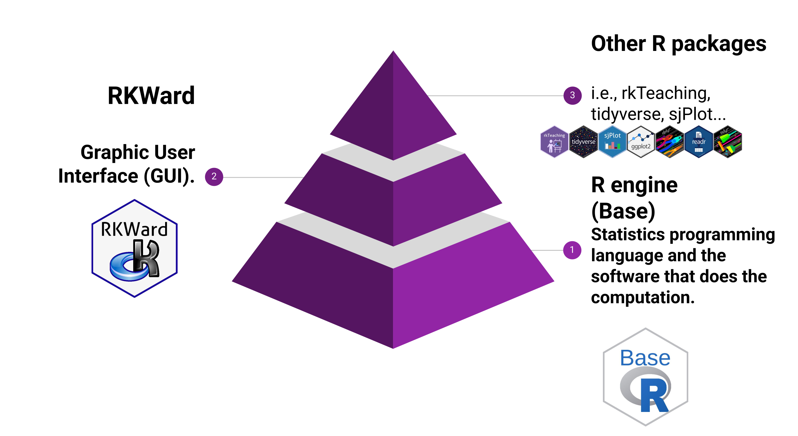
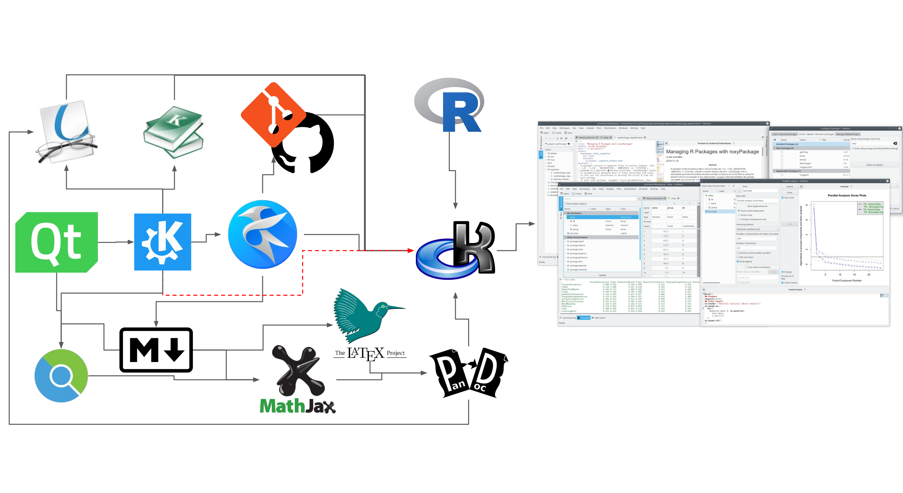
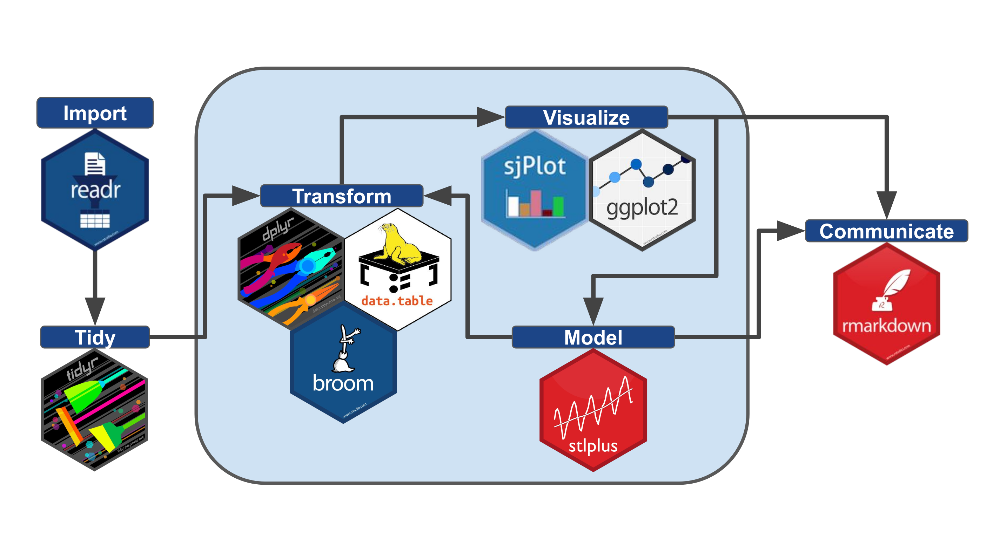
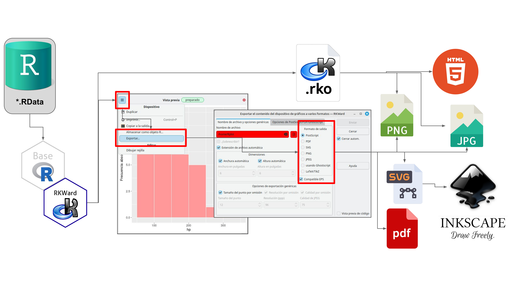
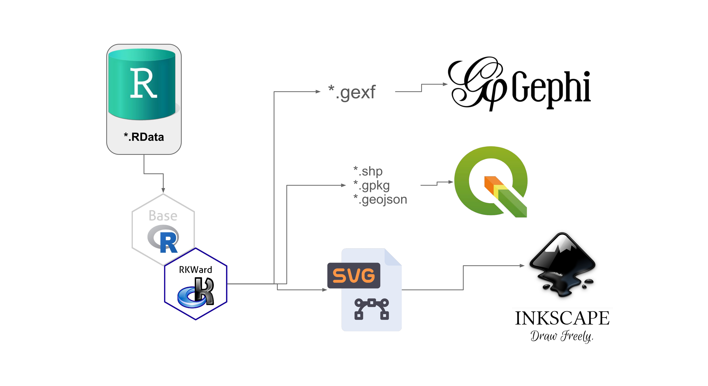
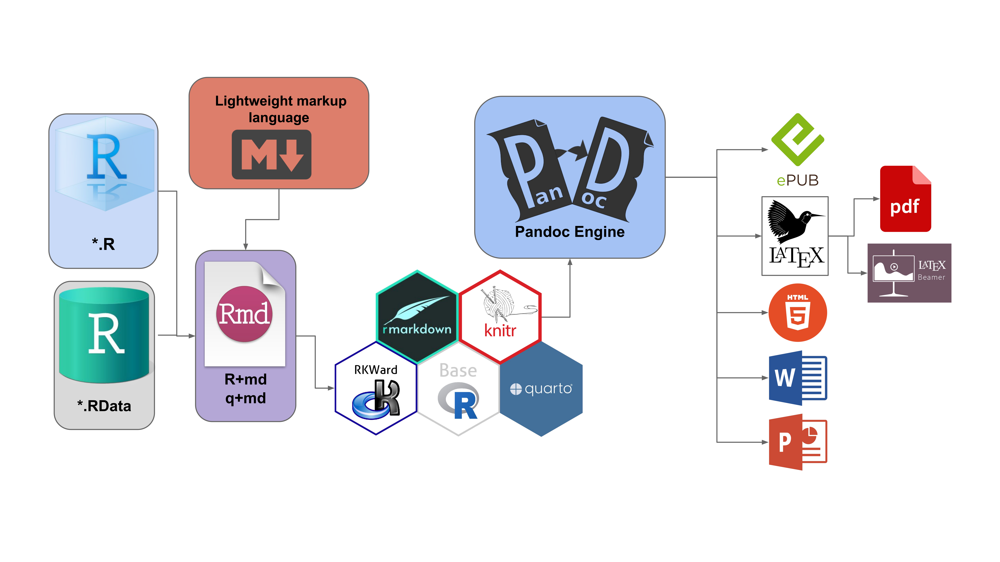

RKWard & rk.universe: Architecture and Workflows
Source:vignettes/architecture.Rmd
architecture.Rmd1. Core Philosophy and Architecture
The Abstraction Pyramid
RKWard does not replace R; it empowers it. The abstraction pyramid shows how the ecosystem is built layer by layer to provide a seamless experience for both beginners and advanced users.

- Level 1 (Base): The R Engine. At its core, the standard R programming language handles all the heavy lifting, statistical computation, and memory management.
- Level 2 (Middle): RKWard GUI. Acting as the intelligent bridge, RKWard provides the Graphical User Interface (GUI), code editor, and workspace browser.
-
Level 3 (Top): R Packages. Specialized packages
like
tidyverse,sjPlot, and therk.universeplugins sit on top, accessible via clicks without needing to memorize syntax.
The RKWard Core Architecture
RKWard is not a monolithic software; it is a highly intelligent Integrated Development Environment (IDE) that acts as a bridge between the R statistical engine and robust C++ graphical libraries.

As the diagram shows, RKWard natively integrates enterprise-grade components: it uses Kate as its advanced text editor, links with Git for version control, and incorporates MathJax and LaTeX for real-time formula rendering. This creates a perfect “shell” that allows users to interact with the vast CRAN and R-Universe libraries without dealing with OS-level technical complexities.
2. The Data Science & Analysis Cycle
The Modern Data Science Workflow
Our graphical menus are strictly designed around the industry-standard data science workflow (originally conceptualized by Grolemund & Wickham in R for Data Science).

Note: Self-elaborated based on Grolemund, G., & Wickham, H. (2016). R for Data Science.
With rk.universe, every step of this iterative cycle is
covered by a dedicated GUI dialog:
-
Import: Read datasets seamlessly with
readrandhavenwrappers. -
Tidy & Transform: Reshape and clean data
effortlessly using
tidyr,dplyr, anddata.tableplugins. - Visualize & Model: Iterate through exploratory plots and fit statistical models natively.
- Communicate: Send your final results to RMarkdown or Quarto.
3. Export, Interoperability, and Publishing
High-Fidelity Graphic Export
Academic publishing requires high-resolution, editable graphics. RKWard breaks “vendor lock-in” by allowing you to export your visualizations into multiple professional formats directly from the device window.

-
Raster Formats: High-resolution
PNGandJPGfor web and presentations. -
Vector Formats:
PDFandSVG(Scalable Vector Graphics). Exporting to SVG allows researchers to open plots in Inkscape and edit them node-by-node to meet strict journal guidelines.
Interoperability & Data Export
RKWard and the rk.universe ecosystem are designed to
talk to the best scientific software in the world. By processing your
.RData, our export tools allow you to send results exactly
as other specialists need them:

-
Spatial Analysis (GIS): Export spatial objects to
.shp,.gpkg, or.geojsonfor native editing in QGIS. -
Complex Network Analysis: Export adjacency matrices
and graphs to the
.gexfformat for advanced visual rendering in Gephi.
Reproducible Research & Rendering Workflow
Data analysis doesn’t end in the R console. Through add-ons like
rk.rmd and rk.quarto, RKWard takes your data,
merges it with Markdown text, and injects it into the
knitr or quarto engines.

RKWard orchestrates the execution of Pandoc (the Swiss-army knife of document conversion) in the background. From a single interface, your R code magically transforms into Beamer/PowerPoint presentations, PDF documents (via LaTeX), HTML5 pages, or ePUB books.